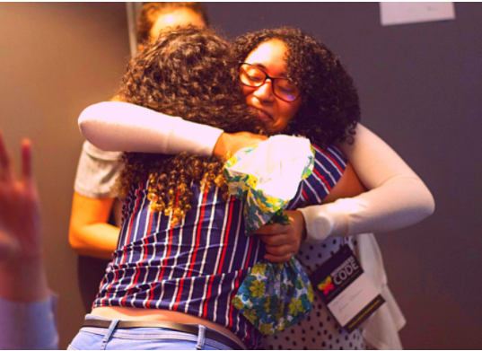

NÓS {SOMOS, CRIAMOS E PROGRAMAMOS} O
PROTAGONISMO
FEMININO
NA TECNOLOGIA
NOSSA MISSÃO
Fortalecer o protagonismo feminino na TI, através do desenvolvimento profissional e econômico

Somos a maior comunidade de mulheres na tecnologia da América Latina
Mais de 20 mil mulheres já participaram de nossas eventos, bootcamps e mentorias, liderados por voluntárias e embaixadoras em 16 de cidades do Brasil, Estados Unidos, Canadá e Chile.
Saiba mais sobre nossa jornada Projetos da WoMakersCode
Conecte-se com a comunidade e acompanhe nossos conteúdos digitais e projetos